早在1834年，查尔斯·巴贝奇就构想出了一种自动的计算机器，这就是他虽然提出但从未制造出来的分析机，旨在完成各种数值计算。30为了强调他的机器的威力和应用范围，巴‘贝奇开玩笑说，“除了编乡村舞蹈，它可以做任何事情。”1尽管在巴贝奇看来，为了计算的目的而设计出来的机器显然是不可能编舞的，但我们今天却认为实现这些完全没有问题。事实上，今天的计算机完全可以通过程序设计而编出乡村舞蹈（尽管质量可能不是最高的）。今天，如果我们想用一个类似的比喻来强调计算机的威力和应用范围，那么我们就会发现，写出这个句子并不容易。几乎任何可以设想的包含符号、数字或文本的任务都或者已经处于计算机的能力范围之内，或者某位专家预言不久就可以做到。显然，我们关于计算的概念已经发生了天翻地覆的变化。1935年，阿兰·图灵在解决大卫·希尔伯特所提出的一个数理逻辑问题的过程中，提出了基本的概念。
巴贝奇原本打算完全用类似齿轮这样的机械部件制造出他的机器，毫不奇怪，由于这个装置的复杂性，他没有成功。只是到了20世纪30年代，随着使用电子继电器的机电计算器的发展，应用范围达到了巴贝奇所设想的程度的机器才得以制造出来。但是在30～40年代，没有一个参与这项工作的人曾经谈起过能够超越于数学计算的机器。正如我们将会看到的，第一个使巴贝奇的梦想重新焕发生机的人是霍华德·艾肯。他写道：
艾肯是在1956年说这段话的，那时计算机通过编程来实现这两项任务在商业上已经是可能的了。如果艾肯认识到阿兰·图灵20年前所发表的论文的重要性，他就不会做出如此可笑的论断了。
阿兰·图灵的父亲尤利乌斯·图灵是一个在印度工作的有突出业绩的公务员。1907年春，在工作了10年之后，他准备回到英国去。当驶往故乡的船通过太平洋时，他遇上了阿兰的母亲埃塞尔·萨拉·斯通尼。埃塞尔·萨拉出生于马德拉斯，她在爱尔兰长大，在巴黎也呆过一段时间，那时正要回印度。在归途中，两人堕入了情网，他们最终一起去了美国的黄石公园旅行。经她父亲同意，他们在返回印度的那年秋天在都柏林结婚。阿兰的哥哥约翰出生于1908年9月。尤利乌斯的工作使得他需要经常在印度南部旅行，埃塞尔·萨拉和这个婴儿总是陪伴在他的身旁。1911年秋，埃塞尔·萨拉怀上了阿兰，在尤利乌斯设法又一次被获准离开之后，他们一同乘船到了英国。阿兰·图灵于1912年6月23日出生于伦敦。3
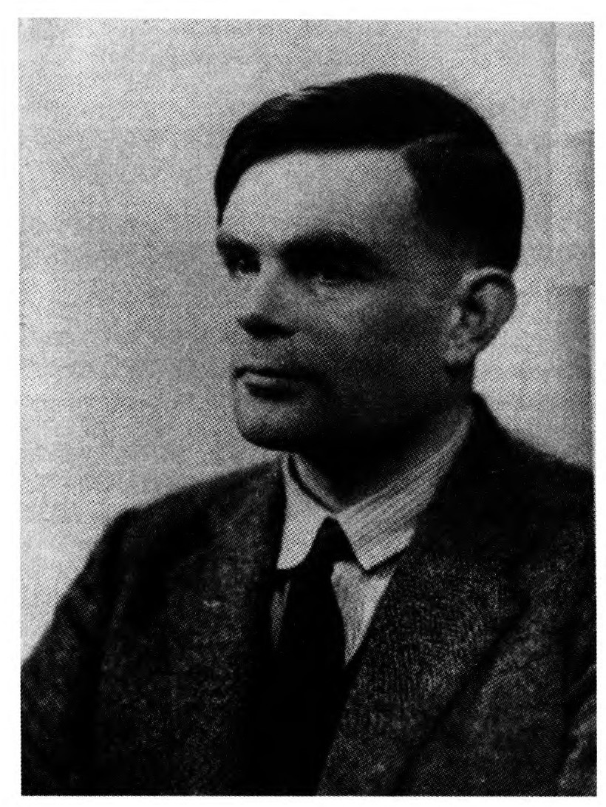
（Elli&Fry：蒙伦敦教国立肖像陈列馆惠允）
对于图灵的家庭来说，帝国的无情现实使生活变得十分艰难。父亲在印度工作，在那里热带病特别容易感染年幼的孩子，而且他们也接受不到适当的教育。母亲或者是和丈夫在一起，或者是和孩子们在一起；只有当父亲休假时，她才可以与所有人团聚。当阿兰15个月大的时候，他的母亲把他和4岁大的哥哥留在了英国，让他们住在一个退伍上校家里，自己则回到了印度。图灵太太在1915年与孩子们一起呆了几个月，1916年春，父母都回到了家，但这时德国潜艇成了另一个潜藏着的危险，于是当丈夫返回印度时，图灵太太留在了英国。事实上，正是由于严酷的战争，母亲才得以陪伴在阿兰的身旁。他是一个早熟的快乐的孩子，很乐意交朋友，同时也是一个做事笨手笨脚的邋遢孩子。虽然许多6岁的孩子都离开家住在学校里，但阿兰的母亲一直让他与自己呆在一起，并把他送到一所当地的日间学校去学习正规教育所不可或缺的拉丁语，这些课程对于阿兰来说可一点都不轻松。
1919年，当母亲再次到印度去的时候，7岁的阿兰又回到了上校的家。时隔不到两年，当图灵太太回来时，她发现她的孩子并没有茁壮成长。她离开时的那个快乐的小男孩消失了踪影，她所看到的是一个不合群的、性格内向的孩子，他的基础教育已经被严重地忽视了。在尽可能地做了努力之后，她把阿兰送到了他哥哥约翰所在的寄宿学校。兄弟俩只在一起呆了几个月，约翰就去读一所公立学校了。31于是，当暑假过后父母离开时，阿兰只得独自过寄宿生活。他可怜地追着父母远去的汽车，以此来表达自己对前景的感受。
到了14岁时，阿兰·图灵开始住在舍波恩（Sherborne）公立学校，他对科学和数学的激情已经被点燃。他发现自己所处的环境特别重视竞技体育，而对数学特别的轻视。他的一位老师曾认为科学是“低等的和狡猾的”，并说数学在屋子里散发出一种难闻的味道。4阿兰的数学天赋虽然得到了认可，却并没有受到重视，他的父母被警告说，他有可能只会成为一个科学专家。最重要的是，他的作业污迹斑斑，字体几乎无法辨认。与此同时，阿兰与其他孩子并不怎么交往，他对所上课程毫不关心（但考试却考得很好），自己做着零碎的数学研究，还研究了爱因斯坦的相对论。
当阿兰遇到他的朋友克里斯托弗·毛肯时，他的生活发生了改变。克里斯托弗和阿兰都喜欢科学和数学，但与阿兰不同，他是一个勤奋的学生，他认真地听所有的课，作业也写得极为整洁。阿兰对克里斯托弗的羡慕无以复加，并决心向他学习。不知是在什么时候，阿兰·图灵知道了自己的同性恋倾向，但可以很自然地猜测，至少对于阿兰来说，他与毛肯的友谊带有性的色彩。图灵的传记作者把阿兰的情感称之为“初恋”，其强烈程度也确实是够了。如果不是因为悲剧发生，没有人会知道这种关系会如何发展，阿兰的感情会怎样调整。阿兰不知道，他的朋友一直患着结核病。他死于1930年2月，作为一个完美的符号永远铭刻在了图灵的心中。5
在舍波恩的最后一年，图灵的学习变得非常优秀，他得到了剑桥大学国王学院的一份奖学金。除了提供食宿，每年他还可获得80英镑的津贴，当时差不多抵得上一个熟练的工人年薪的一半。6虽然数学在舍波恩的名声不佳，但在剑桥大学，图灵的数学天才就可以充分施展出来。G·H·哈代（1877～1947）是剑桥的大数学家，他于1908年出版的《纯粹数学教程》（Course of Pure Mathematics）已经成了一本经典教科书，一代又一代的青年数学家从中掌握了极限过程的基本性质。（现在仍然在销售）有一个关于来自马德拉斯的自学成才的邮政职员拉马努金的公众电视节目（1988年首播）对哈代进行了描绘，节目中说，哈代使拉马努金的数学天才大放异彩。
图灵可以上哈代以及数学物理学家和天文学家阿瑟·爱丁顿爵士的课。1919年，爱丁顿曾带领远征队抵达西非，那里的日全食使得对光线经过太阳附近时的行为进行观测成为可能，于是第一次证实了爱因斯坦在其广义相对论中关于太阳引力使光线偏折的预言。爱丁顿在课上提出了这样一个问题，为什么如此众多的统计观测似乎都沿着著名的钟形正态分布曲线排列。他的课还涵盖了使物理学发生革命的当时非常新的量子理论。但是在这个领域，真正引起图灵注意的是一本新近出版的约翰·冯·诺依曼写的书，这本论述量子力学的数学基础的书是阿兰在舍波恩获的奖。
爱丁顿在课堂上强调的无所不在的钟形正态分布曲线使图灵入了迷，他试图找到其背后的数学解释。他证明了大量统计分布都以正态分布为极限从而趋向于它，这是对微积分的极限过程的一次出色运用。阿兰·图灵并不知道，他的发现早已作为中心极限定理而广为人知了。不过，他的成就给人留下了深刻的印象，这使他得到了一个研究员职位。现在，图灵成了剑桥大学的一个指导教师，年薪300英镑，任期为3年，而且几乎可以肯定能够再任3年。研究员的薪金不必与任何义务挂钩，现在图灵用餐时可以坐在“贵宾席”居高临下地面对本科生了。如果愿意，他还可以通过辅导本科生挣一些外快。这一任命把图灵引向了一条通常被认为通往学术生涯的道路。32在舍波恩，当人们欢庆他们培养出来的这个孩子的成功时，所谓数学的难闻气味以及不要只成为一个科学专家的警告被忘得一干二净。学生们可以放半天的假，以下无耻的诗句也随之不胫而走：
没过多久，阿兰·图灵的确用他所掌握的那些全新的数学证明了他的能力，其结果是一篇发表的论文。在这篇论文中，他对冯·诺依曼所证明的一条定理进行了改进，它属于一个极其专业的领域——殆周期函数论。图灵现在完全走在一条通往成功的数学研究人员的道路上，他的成就只会让其他专家感兴趣。1935年春，他在剑桥听了一门关于数学基础的课程，接着，一切都改变了。
莱布尼茨曾经梦想能够把人的理性还原为计算，并且有强大的机器能够执行这些计算。弗雷格第一次给出了一个似乎能够解释人的一切演绎推理的规则系统。哥德尔在1930年的博士论文中曾经证明了弗雷格的规则是完备的，这样就回答了希尔伯特两年前提出的一个问题。希尔伯特也试图找到清楚明白的计算程序，只要用所谓一阶逻辑的符号系统写出的某些前提和结论给定，那么通过这些程序就总是可以判定，弗雷格的规则是否足以保证结论能够从那些前提中导出。8寻找这些程序的任务后来被称为希尔伯特的“判定问题”。当然，用于解决特定问题的计算程序系统并不是什么新的东西。事实上，传统数学课程在很大程度上就是由这些或被称为算法的计算程序构成的。我们先是学习数的加减乘除算法，然后又学习对代数表达式进行操作和解方程的算法。如果我们又学习了微积分，那么我们就学会了使用莱布尼茨最早为这门学科发展出来的算法。然而，希尔伯特所要找的是一种范围极广的算法。从原则上讲，解决他的判定问题的算法将把人的一切演绎推理都还原为冷冰冰的计算，它在很大程度上将实现莱布尼茨的梦想。
数学家们经常喜欢从两个方向解决一个困难的问题。一方面，他们试图考虑一般问题的特殊情形，而另一方面则是把一般问题还原为某些特殊情形。如果一切顺利，这两条路将殊途同归，从而为一般问题提供一种解答。关于判定问题的工作就是沿着这两个方向进行的，而且已经找到算法的特殊情形与一般问题被还原成的特殊情形之间的鸿沟已经被大大缩小，以至于再往前走一小步就可望完全填平这个鸿沟了，这样就可以给出希尔伯特所要寻求的算法。9剑桥的G·H·哈代对此持怀疑态度，他不无气恼地评论道：“当然不存在这样的定理，这是非常幸运的，因为它如果存在，那么我们就可以用一套机械的规则来解决一切数学问题，我们数学家的活动也就将寿终正寝了。”10哈代当然不是第一个确信他的技巧永远也不会被机器替代的行家里手，但后来的结果表明，这位行家说对了！
比图灵大15岁的剑桥的另一位教师M·H·A·纽曼也是圣约翰学院的研究员，他将在图灵的职业生涯中一直扮演重要的角色。纽曼已经在拓扑学方面做出了开创性的贡献，当时拓扑学还是一门相对较新的数学分支。粗略地说，拓扑学研究的是几何形体经过任意拉伸（只要没有撕破）而保持不变的性质。纽曼在剑桥开设的拓扑学课程把许多年轻的数学家引入了这个正在迅速成长的领域，他还为此写了一本出色的教科书。当纽曼在波伦亚参加1928年的国际数学家大会时，他听到希尔伯特定下了那些目标。仅仅两年之后，年轻的库尔特·哥德尔就表明它们是站不住脚的。纽曼显然被这些进展吸引住了，他在1935年春季开设了一门关于数学基础的课程，其中最令人感兴趣的部分是哥德尔的不完备性定理。在听这门课的过程中，图灵得知了希尔伯特的判定问题。撇开像哈代那样的怀疑不谈，在哥德尔的工作发表之后，人们很难相信希尔伯特所希望的那样一种算法是存在的。阿兰·图灵开始思考如何能够证明这样的算法是不存在的。
图灵知道，一种算法往往是通过一系列规则指定的，一个人可以以一种精确的机械方式遵循这些规则，就像按照菜谱做菜一样。但图灵把关注的焦点从这些规则转移到了人在执行它们时实际所做的事情。他能够说明，通过丢掉非本质的细节，这样一个人可以被局限在少数几种极为简单的基本操作上，而不会改变最终的计算结果。接下来，图灵要说明这个人可以被一个能够执行这些基本操作的机器所替代。然后，只要证明仅仅执行那些基本操作的机器不可能判定一个给定的结论是否可以用弗雷格的规则从给定的前提中导出，他就能够下结论说，判定问题的算法是不存在的。作为副产品，他发现了通用计算机器的一个数学模型。
为了尽可能地弄清楚图灵的思考过程，让我们想象自己正在观察一个计算过程。正在做计算的人实际上在做什么呢？她（因为20世纪30年代似乎做计算的都是女性）正在一张纸上做记号。33我们会看到，她正在把注意力从以前写的东西转移到当前正在写的东西。图灵把不相干的细节从这种描述中去除。她在工作时是否在喝咖啡？这当然是不相干的。她是用铅笔还是用钢笔写字？这也无关紧要。那么，纸张的大小如何？如果纸张较小，那么她就很可能需要经常看看前面那些纸。但图灵确信，这只关乎方便而绝非必然。即使她所用的纸张小得无法在一个符号下面写下另一个符号，或者说，即使她用的是一卷被分成水平方格的纸带，情况也不会发生任何本质的变化。为简便起见，我们设想她正在计算一个乘法：
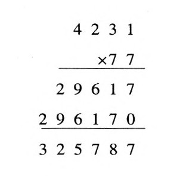
我们可以想象她正沿着一个被划分成方格的纸带进行工作，这不会丢失任何本质性的东西，比如、图灵确信，虽然沿着这样一个一维纸带进行一个复杂的计算也许是很麻烦的，但这样做并不会导致什么基本问题。我们继续来观察计算过程，现在把注意力集中在一卷纸带：我们的目光沿着纸带前后移动，写下符号，有时还会返回去擦除符号并在原处写下新的符号。她关于下一步要写什么的决定将不仅取决于她正在注意的符号，而且还取决于她当前的心灵状态。即使是在我们这个简单乘法的例子中，当她注意到一对对的数字时，她的心灵状态将决定是把它们相加还是相乘。开始时，纸带看起来是这样的：
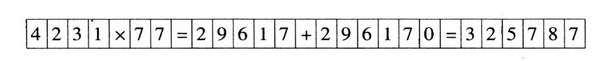
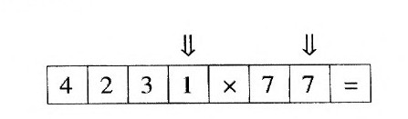
数字1和7上方的箭头（‖）表示她最初注意的是这些符号。她在纸带上写下它们的乘积7：
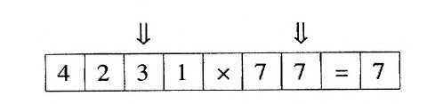
现在她把注意力转向数字3和7，接下来轮到它们相乘了。像这样把一对对的数字相乘之后，她需要把得到的两部分乘积加起来：
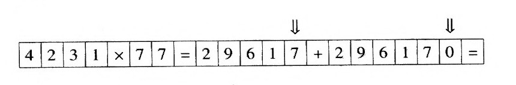
她先把数字7和0加起来，得到
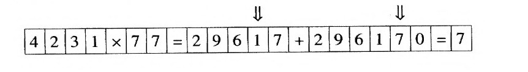
现在她必须把1和7加起来得到8。注意，这时她所注意到的数字与她开始计算时进行相乘的数字是相同的。然而尽管数字是相同的，但她的心灵状态却不一样，这时它们是相加而不是相乘。
这个简单的例子已经说明了任何计算所具有的本质特征。每一个进行算术、代数、微积分或任何一个数学分支中的计算的人的操作都要受到以下限制：
·在计算的每一个阶段，只有少数符号受到了注意。
·每一个阶段所采取的行动仅仅取决于受到注意的那些符号以及计算者当前的心灵状态。
一个人可以同时处理多少符号？正确地进行一项计算需要多少人？第一个问题的答案当然是因人而异的，但无论如何不可能很多。而对于第二个问题，答案是一个人。这是因为，同时注意几个符号总是可以通过每次注意一个符号来实现。11而且，把注意力从纸带上的一个方格转到一定距离以外的另一个方格总是可以通过一系列移动来实现，其中每一次移动或者是左移一个方格，或者是右移一个方格。由这一分析可以推出，任何计算都可以被看作是以下面的方式进行的：
·计算通过在一条被划分成方格的纸带上写下符号来进行。
·执行计算的人在每一步都只注意其中一个方格中的符号。
·她的下一步将仅仅取决于这个符号和她的心灵状态。
·她的下一步是这样的：她在当前注意的方格里写下一个符号，然后把注意力转向它左边或右边的相邻方格。
现在就很容易看出，做这项工作的人可以用一个机器来替代，纸带（可以看成带有用编码信息来表示的符号的磁带）在机器中来回移动。计算者的心灵状态用机器内部的不同布局来表示。机器的设计必须使得每一时刻纸带上只有一个符号，这个符号被称为被注视符号。根据其内部布局和被注视符号，机器将在纸带上写下一个符号（取代被注视符号），然后或者继续注视同一个方格，或者转到纸带上与之相邻的左边或右边的位置。就计算而言，机器如何制造或者由什么来制造，这都无关紧要，重要的只是它能够控制一个具有不同布局（也被称作状态）的数，当它处于每一种布局或状态时，都可以作相应的处理。
问题的关键不在于真的造出一台图灵机，它毕竟只是数学的抽象。34关键之处在于，基于图灵对计算概念的分析，我们就有可能得出结论说，通过某种算法程序可计算的任何东西都可以通过一台图灵机来计算。因此，如果我们可以证明某项任务无法用图灵机来完成，那么我们就可以说，没有任何算法程序可以完成这项任务。这就是图灵证明判定问题不存在算法的方法。此外，图灵还说明了如何造出这样一台图灵机，这台图灵机可以独自完成任何图灵机所能做到的任何事情——通用计算机的一个数学模型。
由图灵对计算过程的分析我们可以看出，任何计算都可以通过一种后来被称为图灵机的受到严格限制的装置来实现。我们可以考察几个非常简单的例子。演示一台图灵机需要哪些东西呢？首先，我们需要它所有可能的状态。然后，对于每一个状态以及纸带上可能出现的每一个符号，我们必须指明处于那个状态的机器遇到那个符号时会怎样进行操作。我们已经说过，这个操作仅仅包括被注视方格中符号的可能改变、向左或向右移动一个方格以及状态的一种可能变化。如果我们用大写字母来表示不同的机器状态，那么陈述：
就可以用符号表示为Ra：b→S。类似地，同样条件下向左移动一个方格可以表示为Ra：b←S。最后，只改变纸带上的符号而不沿纸带运动的状态可以表示为Ra：b*S。我们通常把这些公式称为“五元组”，因为其中的每一个都要用到5个符号（不包括冒号）。于是任何一台图灵机都可以通过一系列这样的五元组来演示。
让我们看看如何造出一台能够检验一个给定的自然数是奇数还是偶数的图灵机。所指定的数将用我们所熟悉的记法记作由1，2，3，4，5，6，7，8，9，0所组成的一串数字。当然，（以这种方式写出的）一个数是奇是偶一眼就能看出。只要看看最右边的数字，如果它是1，3，4，5，7或9，那么这个数就是奇数，否则就是偶数。但是我们所使用的装置将从注视最左边的数字开始。由于图灵机每次只能处理一个数字，而且每次只能移动一个方格，所以如何进行处理并不是显而易见的。写在纸带上的“输入的”数就像这样：
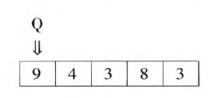
这里纸带上写的是数字94383，机器处于它最初的状态Q上，此时正在注视最左边的方格。虽然纸带只显示了5个方格（刚好足够容纳输入的数），但对于一项计算来说，很重要的一点就是纸带的量没有限制。因此，如果机器试图从纸带的最右端移出去，那么一个空白的方格总会出现。我们把空白方格当作一个特殊字符来处理，记作□。
我们的图灵机将总是从注视最左端方格的状态Q开始。无论什么数输入机器，最后的结果都是一条除一个方格外其余都是空白的纸带。如果最初输入的数是偶数，那么那个方格中将是0；如果最初输入的数是奇数，那么那个方格中将是l。这台机器将具有4个状态，分别用Q, E，O和F来表示。我们已经说过，Q是最初状态。无论机器处于什么状态，如果它注视的是一个偶数，那么它将擦除这个数字（即在它上面印上一个空格），向右移动一格，然后终止于状态E。类似地，如果它注视的是一个奇数，那么它将擦除这个数字，向右移动一格，然后终止于状态O。最终，它将注视并擦除整个输入，得到一个空格。如果它终止于状态E，那么它将印上一个0；如果终止于状态O，则将印上一个1。然后，它将向左移动一格停止下来。下面是组成这个机器的五元组：
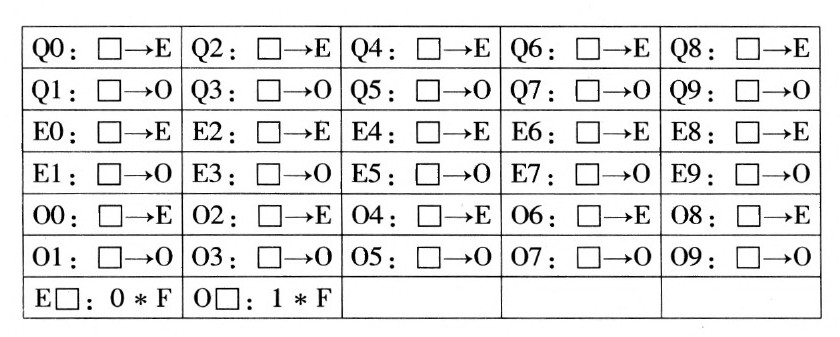
输入为94383的全部计算显示了机器的详细操作：
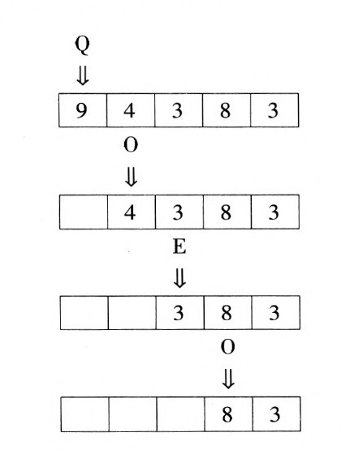
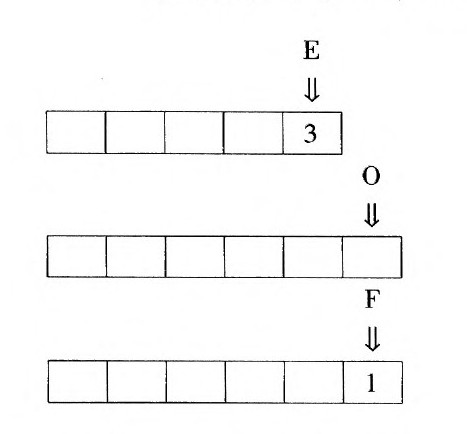
机器从注视数字9的状态Q开始，相应的五元组位于表中的第二行、最后一列。这一五元组使机器擦除了9，向右移动一个位置，进入状态O。在注视4的状态O中，相应的五元组位于表中的第五行、第三列。相应地，机器擦除4，向右移动，进入状态E。接着，在注视3的状态E中，相应的五元组位于表中的第四行、第二列，机器擦除3，继续向右移动，进入状态O。在注视8的状态O中，相应的五元组位于表中的第五行、最后一列，机器擦除8，向右移动，进入状态E。状态E又一次注视3，相应的五元组位于表中的第四行、第二列，机器擦除3，继续向右移动，进入状态O。在状态O中，机器注视的是一个空格，相应的五元组位于表中的最后一行、第二列，空格被1替换，机器处于原位不动，进入状态F。在状态F中，机器注视的是一个空格，此时没有五元组可用了，于是机器停止。计算的结果是纸带上只留有一个数字1，这是正确的，因为输入的数为奇数。
与物理装置不同，图灵机仅仅作为数学抽象而存在，所以可以不必受纸带的量的限制。当由一个五元组Q□：□→Q所组成的图灵机从一条空白的纸带开始时，它将随着纸带的量的持续增长而“永远”向右移动：
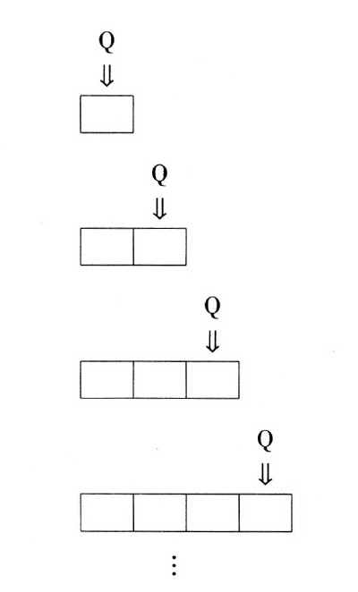
图灵机的计算可以永远持续下去，即使它所通过的纸带的量是固定的。例如，考虑由Q1：1→Q和Q2：2←Q这两个五元组所组成的图灵机。如果输入为12，那么这台机器将像下面这样来回跳动：
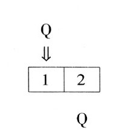
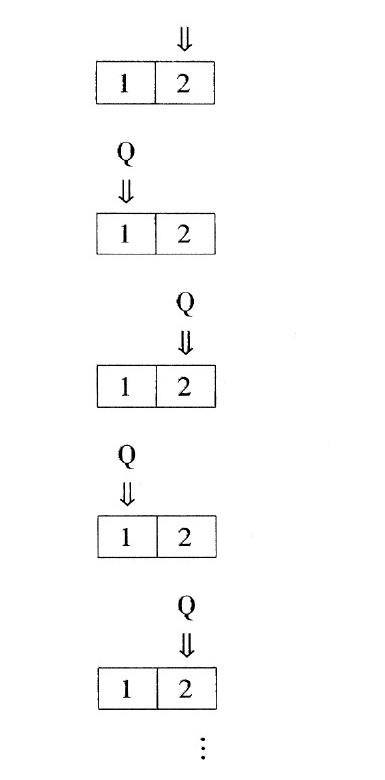
这种行为严格依赖于输入。例如，如果输入是13，那么同一台机器的计算将是下面这样：
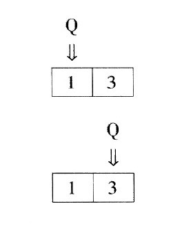
在注视3的状态Q中，没有五元组可以应用，于是机器停止。总之，某些输入会使有些图灵机停止下来，另一些则不会。图灵把康托尔的对角线方法应用于这种情况，得到了图灵机所不能解决的问题，由此便推出了判定问题的不可解性。
马科斯·纽曼的课使阿兰·图灵注意到了判定问题，它最令人感兴趣的部分是哥德尔的不完备定理。所以正在思考用一系列五元组来表示他的机器的图灵就很自然地想到了用自然数来做机器的代码，并且可以使用康托尔的对角线方法。我们将遵循图灵的思路，设置一种与他所使用的代码相似但不尽相同的代码。
为了设置我们的代码，我们考虑彼此由分号隔开的组成图灵机的五元组。于是由一对五元组：
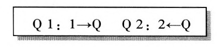
所组成的图灵机可以记作Q1：1→Q；Q2：2←Q。然后我们根据下述方案用一串十进制数来替换每一个符号：
·开始和结尾都为8，其间只有0、1、2、3、4、5的字串将被用来表示纸带上的符号。下表给出了我们将要用来替换十进制数和□（作为纸带上的符号）以及→←*：的特殊表示：
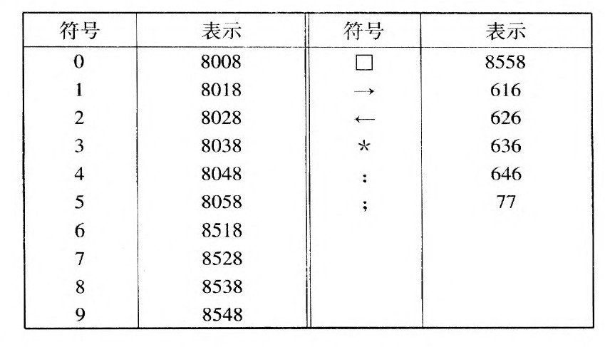
·开始和结尾都为9，其间只有0、1、2、3、4、5的字串将被用来表示状态。特别地，开始的状态Q将用字串99来表示。
于是，刚才所说的两个五元组的图灵机将用998018 6468018 6169977998028646802862699来编码。对于我们用来区分奇数和偶数的图灵机来说，我们可以分别用919、929和939来编码E、O、F这三个状态。这样，整个机器的码数就成为：
998008646855861691977998028646855861691977998048646855861691977 998518646855861691977998538646855861691977998018646855861692977 998038646855861692977998058646855861692977998528646855861692977 99854864685586169297791980086468558616919779198028646855861691977 919804864685586169197791985186468558616919779198538646855861691977 91980186：685586169297791980386468558616929779198058646855861692977 919852864685586169297791985486468558616929779298008646855861691977
929802864685586169197792980486468558616919779298518646855861691977 929853864685586169197792980186468558616929779298038646855861692977 929805864685586169297792985286468558616929779298548646855861692977 919855864680086369397792985586468018636939
尽管这不过是一个大数，但它已经显示了各个五元组的码数。请注意，从这个码数中恢复五元组是很简单的：首先找到分隔五元组码数的77这个字串，然后再对每一个五元组进行解码。例如：92985386468558616919这个码数可以分解成929 85386468558616919，它可以被解码为O8：□→□E。当然，编码可以通过许多不同的方式来设置，但这一方案拥有一个重要而有用的性质，那就是明显的可解码性。35
从上面的例子可以看出，任何图灵机都可以被认为是从纸带上的数的最左边的数字开始注视。在这些数中，有些数会使机器最终停止，而另一些则会使机器永远运行下去。让我们把由前一类自然数所组成的集合称为图灵机的停机集合。现在，如果我们认为一台图灵机的停机集合组成了一个“包裹”，并认为那台机器的码数就是这个包裹的标签，那么我们就具备了应用对角线方法的标准条件：包裹上的标签就是包裹里的东西——这里是自然数。36对角线方法将允许我们构造出一个与图灵机的任何停机集合都不同的自然数集合，我们把它称为D。方法是这样的：D将完全由图灵机的码数组成。对于每一台图灵机来说，它的码数属于D，当且仅当它不属于那台机器的停机集合。这样，如果某台图灵机的码数属于它的停机集合，那么这个码数就不属于D；而如果这个码数不属于机器的停机集合，那么它就属于D。无论是哪种情况，D都不可能是这台机器的停机集合。既然每一台图灵机都是如此，我们就可以得出结论说，集合D不是任何图灵机的停机集合。
等等！这里还有一个固执的人不相信这一点。我们听听在这个固执的人（SP）和无所不知的创造者（OA）之间展开的一场对话：
自然数集D的定义使它与任何图灵机的停机集合都不同。但这与判定问题有什么关系呢？它们之所以有关，是因为希尔伯特把这个问题称为数理逻辑的基本问题。希尔伯特认为，对判定问题的解答将会为解决所有数学问题提供一种算法。同样的理解也潜藏于哈代的看法中，他确信判定问题永远也不会有一个解答。只要我们严肃地看待这一点，便会发现，它隐含着只要有一个数学问题可以被证明在算法上是不可解的，那么判定问题本身就必定是不可解的。集合D将为我们提供这样一个例子。
考虑下面这个问题：
这就是一个不可解问题的例子。要想弄明白不存在这样的算法，我们首先要看到，通过图灵对计算过程的分析，如果存在着这样一种算法，那么就会有一台图灵机能够完成同样的事情。就像我们构造出来的区分奇偶数的图灵机那样，我们可以想象这样一台处于初始状态Q的机器从已知数的最左端数字开始注视，就像这样：
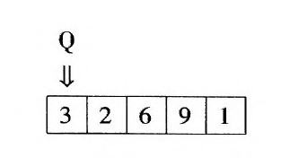
类似地，我们将希望机器最终会停机，除一个数字以外，纸带的其余部分都是空白的：如果输入的数属于集合D，那么这个数字就是1，否则就是0。最后，我们希望它终止于状态F，并且机器的五元组都不从字母F开始。37例如，
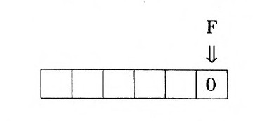
现在，我们想象把以下两个五元组加到我们的图灵机中：
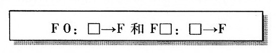
如果输入的数属于D，那么新机器将像以前那样运转，最终将以纸带上的1而告终。然而，如果输入的数不属于D，那么这台机器将永远向右移动。因此，这台新机器的停机集合恰恰就是集合D。然而这是不可能的，因为D是用对角线方法构造出来的，所以它与任何图灵机的停机集合都不同。因此，我们关于存在着一种区分D的成员与非成员的算法的假定必定是错误的。这样的算法不存在！用算法来区分D的成员与非成员的问题是无法解决的！
正如我们已经看到的，希尔伯特和哈代都相信，对于判定问题的一个算法解将意味着任何数学问题都可以通过一种算法来解决。所以一旦我们有了一个在算法上不可解的数学问题，那么判定问题的不可解性就得到了。为了看出如何与集合D发生关系，我们把下面的前提和结论与每一个自然数n相联系：
前提
n是某台图灵机的码数，它被印在机器的纸带上，最左边的数字被注视。
结论
以这种方式启动的图灵机最终将停止。
利用一阶逻辑的语言，这两个句子都可以被翻译成逻辑符号。于是可以证明，这个结论可以用弗雷格的规则从前提中导出，当且仅当这台图灵机从它纸带上的码数开始后将最终停止。相应地，它为真当且仅当n不属于D。因此，如果我们有了一种判定问题的算法，那么我们就可以用它来判定一个数是否是D的成员。也就是说，给定一个自然数n，我们可以用这种判定问题的算法来检验这个结论是否可以从前提中导出。如果可以，那么我们就知道n不属于D，如果不可以，那么n就属于D。由此可知，判定问题在算法上是不可解的。12
图灵的工作中有一些地方是令人困惑的。他已经证明，没有图灵机可以被用于解决判定问题。然而，为了说明判定问题不存在任何种类的算法，图灵曾诉诸他对人执行一项计算时的过程的讨论。他关于任何这样的计算也可以用一台图灵机来完成的论证是否令人信服呢？为了支持他的论证，图灵证明了许许多多复杂的数学计算都可以在图灵机上完成。38不过，他在检验自己的工作的有效性方面所提出的最为大胆的、影响最为深远的思想却是通用机。
考虑被一个空白方格所隔开的写在图灵机纸带上的两个自然数（通常的十进制记法）。第一个数是某台图灵机的码数，第二个数是这台机器的一个输入：
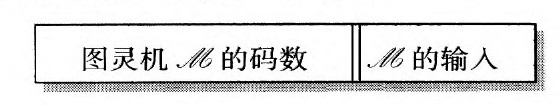
现在想象一个人要完成这样一项任务，他要完成把纸带上的第二个数作为输入时，码数为第一个数的图灵机所要做的事情。这项任务是很简单的。她先得到码数为纸带上第一个数的机器的五元组，然后只要按照五元组的要求在纸带上进行操作就可以了。图灵的分析已经证明，任何计算任务都可以通过一台图灵机来实现。把这一思想应用到当前的任务中，我们可以设想一台图灵机，它从图灵机M的码数开始，只要它的输入与M的输入相同，它就可以完成机器M所能做到的事情。一台图灵机单凭自身就可以完成任何图灵机可能做到的任何事情。图灵通过说明一个人如何能够得出这样一台通用机的五元组来检验这个非凡的结论。在现在被称为程序设计的几页文献中，他出色地做到了这一点！13
自莱布尼茨的时代起，甚至更早一些时候，人们一直在对计算机器进行思考。在图灵之前，一般的想法是，对于这种机器来说，机器、程序和数据这三种范畴是完全分离的。机器是一种物理对象，今天我们把它称为硬件；程序是做计算的方案，也许体现在穿孔卡片或线路连接板上的缆线连接上；而数据则是数值输入。图灵的通用机表明，这三种范畴的相互分离是一种错觉。图灵机开始被看成是一台拥有机械部件——硬件——的机器。它在通用机纸带上的码数则起到了程序的作用，它为通用机详细指明了执行计算所需要的指令。最后，通用机在一步步的运转中把机器码的数字仅仅看成需要进一步处理的数据。这三个概念之间的流动性对于现在的计算机实践来说是非常基本的。用一种现代的编程语言所写成的程序对于处理它以使其指令能够得到执行的解释程序或编译程序来说就是数据。事实上，图灵的通用机本身就可以被看成一个解释程序，因为它是通过解释一连串五元组来执行它们所标明的任务的。
图灵的分析为理解古代的计算技术提供了一种独到而深刻的角度。计算的概念原来远不止算术和代数运算。同时，这种眼光预见到了原则上能够计算任何可计算的东西的通用机。图灵关于专用机器的例子已经成了程序设计的实例；通用机器则是解释程序的第一个例子。通用机还为存储程序计算机提供了一个模型，纸带上编了码的五元组扮演了存储程序的角色，机器在程序和数据之间没有作基本的区分。最后，通用机表明了如何能够把被认为是机器功能描述的五元组形式的硬件，替换成以编码的形式存储在通用机纸带上的以同样的五元组形式表现出来的等价的软件。
在证明判定问题不存在算法解的过程中，图灵没有想到在大西洋的对岸也有人得出了类似的结论。当录有普林斯顿大学的阿隆佐·丘奇39的一篇题为“一个不可解的初等数论问题”的文章的《美国数学杂志》（American Journal of Mathematics）送到剑桥时，纽曼已经收到了图灵论文的第一稿。在这篇论文中，丘奇说明了在算法上不可解的问题是存在的。他的论文没有提到机器，但它的确点出了两个概念，其中每一个都是为了解释可计算性或丘奇所谓的“有效的可计算性”的直观概念而提出来的。这两个概念分别是丘奇和他的学生斯蒂芬·克林所提出的入可定义性，以及哥德尔（在他1934年春访问普林斯顿高等研究院期间所作的讲演中）所引入的一般递归。这两个概念已经被证明是等价的，丘奇的不可解问题实际上是相对于其中的某一个概念不可解。尽管丘奇在这篇论文中并没有得出希尔伯特的判定问题本身相对于这些概念是不可解的结论，但《符号逻辑杂志》1936年的第一期中刊出了丘奇的一个简注，在这个注释中，他的确得出了这个结论。图灵很快就证明了他的可计算性概念与λ可定义性是等价的，并且决定到普林斯顿去呆一段时间。
虽然图灵的大部分成就都可以说是对美国人所做工作的再发现，但他对计算概念的分析以及他对通用计算机的发现却是全新的。40库尔特·哥德尔曾经对丘奇的理论颇有疑虑，正是图灵的分析才最终使他相信它们是正确的。14
虽然英国的数学家们通常并不在乎能够获得博士学位，但图灵去普林斯顿大学的最方便的办法就是在那里当一名研究生，这与他的成就真是不相配。他在普林斯顿的两年里完成了一篇著名的博士论文（阿隆佐·丘奇任导师）。由于从系统外部考察时，哥德尔的已知系统的不可判定命题可以被看成为真，所以一个自然的想法就是把这样一个命题作为一个新的公理加到已知系统中，这样就得到了一个新系统，其中不可判定命题不再是不可判定的。当然，应用哥德尔的方法，新系统也会有它本身的不可判定命题。图灵在他的论文中一次次地这样做，从而研究了系统的分层结构。
这篇论文所引入的另外一个概念是一种改进了的图灵机，它可以中断它的计算来寻求外部信息。利用这样的机器，谈论两个不可解问题中哪一个“更不可解”就是可能的了。总而言之，这篇论文所引入的思想将会为一系列研究者的工作提供基础。15
1936年的时候（一直到50年代），普林斯顿大学数学系坐落在一座漂亮的红砖建筑范氏大楼（FineHall）中。41那时，范氏大楼里不仅有普林斯顿大学的数学教师，而且还有新近成立的高等研究院的数学家。从纳粹统治之下逃出来的科学家已经开始大量涌入美国了。20世纪30年代，数学精英齐聚普林斯顿使得哥廷根最终被超越。在范氏大楼的走廊上我们能够见到赫尔曼·外尔、阿尔伯特·爱因斯坦和约翰·冯·诺依曼，后者的兴趣已经偏离希尔伯特关于数学基础的纲领很远了。
在普林斯顿的第一年，剑桥提供给他的奖学金很少，图灵必须想办法应对。当他在剑桥时，奖学金还是相当丰厚的，而且学校还提供食宿。不过在第二年，他觉得自己已经很富裕了，因为他获得了享有盛誉的宝洁奖学金。在支持他申请这一奖学金的推荐信中有这么一封：
1937年6月1日先生，
约翰·冯·诺依曼敬上。16
奇怪的是，既然冯·诺依曼曾经深入研究过希尔伯特关于数学基础的纲领，图灵关于可计算性的工作以及他关于判定问题不可解性的证明竟然没有在这封信中被提及。很难相信冯·诺依曼不知道这一点。我认为其中的关键就在于“我所感兴趣的数学分支”这几个字：作为那个世纪的一个伟大数学家，一个无书不读而且几乎过目不忘的人，在哥德尔证明了他在这个领域的大部分工作都是徒劳无益的之后，冯·诺依曼显然决定不再与逻辑打交道了。他甚至有一句名言说，在哥德尔1931年的工作出来之后，逻辑方面的文章他一篇也不读了。17鉴于图灵的工作对冯·诺依曼在第二次世界大战期间和第二次世界大战之后关于计算机的思想所起的作用，这件事是很重要的。
冯·诺依曼的朋友兼合作者斯坦尼斯拉夫·乌拉姆给图灵的传记作家安德鲁·霍奇斯所写的一封信提供了一些证据。42这封信提到了冯·诺依曼提出的一个游戏，这是在1938年夏天冯·诺依曼和乌拉姆一起在欧洲旅行期间提出的。这个游戏包括“在一张纸上写下尽可能大的数，并通过与图灵的某种图解有关的方法来定义它”。乌拉姆的信中还说：“……冯·诺依曼在1939年关于发展形式数学系统的机械方法的谈话中和我多次谈到了图灵。”乌拉姆的信说得很清楚，无论以前的情况怎样，到了1939年9月第二次世界大战爆发，冯·诺依曼已经非常了解图灵关于可计算性的工作。18
图灵的通用计算机是一个奇妙的概念装置，它仅凭自己就可以执行任何算法任务。但我们真能制造出这样一种东西吗？除了这种机器原则上所能完成的任务之外，它的设计和制造能否使其在可以接受的时间内应用适量的资源来解决真实世界的问题呢？这些问题从一开始就被图灵注意到了。在（伦敦的）《时代》杂志上刊登的一篇悼文中，图灵的老师马科斯·纽曼曾经写道：
他并没有一味地思考这种可能性。为了熟悉现有的技术，图灵特地用机电继电器制造出了一台能够把二进制数进行相乘的装备。为此，他进入了物理系研究生的机加工车间，制作了各种部件，而且亲手制造出了所需的继电器。43
1938年夏天，图灵回到了剑桥。尽管战争一年以后才会降临，但他却应邀参与了破译德军通信密码的工作。图灵和哥德尔的工作都包含了密码和解密，但那些密码故意选择得很容易识破，而不像德军正在使用的密码努力不让人猜透。事实上，德国在整个战争中都以为他们的密码是无法识破的。
根据纳粹德国和苏联之间的一项令世界震惊的协定，1939年9月1日，德军入侵波兰。几天以后，英国和法国根据承诺向德国宣战。9月4日，图灵向布莱奇利庄园（Bletchley Park）——伦敦北部的一座维多利亚时代的庄园——的一个主要由学术界人士组成的小组作了汇报，当时他们正设法读取敌军竭力向他们隐藏的信息。这个小组的规模注定不会小，到了战争结束，大约有1.2万个从事破解密码和信息分析的人住在这个庄园里。其中除了军队和员工之外，还有大量的“皇家海军女子服务队成员”，她们加入了海军后备军，操纵的正是图灵和他的同事所设计的机器。
德军用来通信的是一台被称为“谜”（Enigma）的改良的商用加密机器。这台机器有一个字母键盘，当一个表示特定字母的键被按下之后，一个小窗口里就会出现一个字母，即原始字母的加密。当整个一段话被加密之后，它将通过普通的无线电报发送出去。指定的收信人将在另一台“谜”上输入被加密的字母，于是原始信息就出现了。机器内部装有若干旋转的轮子，以改变输入字母与加密后的字母之间的一一对应。军用的保密性通过外加的一块线路连接板而得到了提高。每一天机器都会有不同的初始设置，但对于发送者和接收者来说必须是相同的。
在战争开始之前，一群波兰的数学家已经成功地破译了关于德国的“谜”的信息。但是当德国人把机器变得更为复杂之后，他们就无计可施了，于是便把工作交给了英国人。布莱奇利庄园的密码专家大多是喜爱解谜的人，他们有时会全神贯注于问题的智力层面而乐在其中。但这项工作是极为严肃的，图灵的特殊责任就是在德国的潜艇和他们的总部之间传递信息。被这些潜艇击沉的给英国运送急需物资的船不计其数，如果德军潜艇不被阻止，英军就有可能因粮草不济而失利。借助于一本从被俘潜艇中发现的电码本以及发送者无意中透露出来的重要信息，“谜”的通讯得以成功破译。而图灵着实功不可没，他成功地设计出一台机器（不知是什么原因，它被称为“霹雳弹”[BOMBE]），这台机器可以用这些信息迅速地推导出“谜”在某一天的设置情况。“霹雳弹”通过系统地执行一连串逻辑推理，从大量可能的数值中把谜的可能状态一一排除，最后只剩下几个数值留给手工处理，直到最终获得正确的结果。44
图灵的“霹雳弹”有几个令人称奇的地方。在图灵的设计草图出来之后仅仅几个月，12台机器就造了出来并被交付使用。令人吃惊的是，它们无需任何改进就可以工作。要想获得德国海军的“谜”在某一天的设置，就要从150，000，000，000，000，000，000种可能性中找到正确的组合。平均说来，图灵的“霹雳弹”可以在3小时之内解决这个问题，有一次它只用了14分钟。
在布莱奇利庄园，图灵被戏称为“那个教授”（theprof），他的种种怪癖也成了大家津津乐道的话题。许多年以后，人们还会谈起他把茶杯与散热器系在一起的习惯。在布莱奇利庄园的岁月里，最富有启发性的事情也许莫过于图灵学习射击的过程了。在1940和1941年的黑暗日子里，英国似乎随时可能遭袭，丘吉尔政府组建了一个民兵组织——地方军。尽管由于图灵工作的重要性，他不需要加入地方军，但他还是决定这样做，为的是学会射击。地方军的新兵都要求参加按时训练，没过多久，图灵就发现这纯粹是浪费时间，于是就不参加了。当怒气冲冲的菲灵汉姆上校要求他遵守纪律时，图灵耐心地解释说，他参加地方军本来就是为了学习射击的，既然他现在已经成了一个出色的射手，他就不再有任何理由参加了。上校说：“但你是否参加不是你说了算的……这是你作为一名士兵的义务……你必须遵守军纪。”上校提醒图灵，在申请入伍的时候，他曾填过一张表，表中有这样一个问题：“你知道参加地方军就意味着你必须遵守军纪吗？”图灵说，他的确回答了这个问题，但他写的答案却是：“不知道。”当时在考虑这个问题时，图灵显然认为回答“知道”对他没有任何好处。20
除了有趣，这则轶事还揭示出阿兰·图灵的许多性格。他倾向于忽视我们大部分人生活于其中的社会框架，在任何情况下，他都会通过思考得出答案，并且从头开始寻求最佳的行动。大多数人在面临类似于地方军申请表上的问题时都会认为，只有一个肯定的答案才是可以被接受的，但图灵却从字面上来理解这个问题，认真思考最好的答案应当是什么。尽管对于图灵来说，这种思维方式在他的科学研究中很管用，但在他的人际交往和社会关系中却并不好使。几年以后，它最终导致了灾难。
图灵发现自己与布莱奇利庄园中的一位年轻数学家琼·克拉克变得非常友好。事实上，他爱上了她，而且提出了结婚的请求，并被愉快地接受了。几天以后，他把自己的同性恋倾向告诉了她，此时她非常不安，但还是准备履行婚约。几个月之后，就在他们一起外出度假后不久，图灵认定，尽管他真心爱着琼，但这不管用，于是还是解除了婚约。显然，这是他第一次，也是最后一次允许自己想象与一位女性有恋爱关系。
与此同时，图灵从未停止思考通用机概念的可应用性。他猜想，正是这种通用性概念揭示了人的大脑拥有强大的能力的秘密，从某种意义上来说，我们的大脑正是通用机。他设想，如果一台通用机可以被制造出来，那么它就可以玩象棋这样的游戏，可以像一个孩子那样学习许多东西，并且最终展示出智能行为。在布莱奇利庄园中，人们就这些思想曾经有过许多讨论，图灵甚至还草拟了可以让机器下棋的算法。同时，制造一台通用计算机所需要的某些硬件也在布莱奇利庄园发展起来。
英国所截获的某些源自纳粹最高当局的讯息并不是“谜”加密的，也不是用普通电报传送的。英国人很快就意识到，它们具有电传打字机输出的特征。在这样一个系统中，一段文字中的每一个字母都是用一张纸带上的一排孔来表示的。与早期的摩尔斯电码不同，它不需要人工操作。德国人似乎正在使用一台能够一次性加密和传送讯息的机器，接收者也要有一台能够解码的机器。在布莱奇利庄园，这个系统被称为“鱼”，图灵的老师马科斯·纽曼承担了这项破译任务。他所使用的某些方法被戏称为“图灵主义”（turingismus）45，以暗示其来源。但“图灵主义”要求对大量数据进行处理，要使破译发挥作用，这个过程必须非常迅速地完成。21
20世纪30年代，大多数美国人和欧洲人都已经有了收音机。在那些日子里，在晶体管发明之前，收音机里含有许多真空管（在英国称为“电子管”）。工作时，它们会像低瓦数灯泡一样发光，而且会变得很烫。就像灯泡一样，它们很快就烧坏了，于是不得不进行更换。当收音机停止工作时，人们可以把真空管从它们的槽中拔出来，送到商店去测试。只有在更换了坏的真空管之后，收音机通常才能起死回生。美国无线电公司的真空管目录中列出了数百种型号的真空管，它们每一种都有各自的特点，是工程师不可或缺的东西，也拥有许多爱好者。1943年3月，阿兰·图灵在访问了美国几个月后乘船回到了家。在美国，他帮助美国人制造了自己的“霹雳弹”，以监测“谜”的海军讯息。途经大西洋时，他研究了这份美国无线电公司目录以打发时间，因为人们已经发现，真空管可以实现以前由电子继电器来完成的逻辑转换。这些真空管很快：它们的电子以接近光速的速度行进，而继电器则依赖于机械运动。事实上，真空管电路已经被实际应用于电话交换，图灵与这项研究的带头人——极富才华的工程师T·弗劳尔斯进行了联系。在弗劳尔斯和纽曼的领导下，一台体现了“图灵主义”的机器很快就做出来了。这台被称为“巨人”的机器是一项工程奇迹，它包含1500根真空管。世界上第一台电子自动计算装置诞生了。毫不奇怪，从本质上讲，它所进行的计算是逻辑的而非算术的。被截获的德军讯息以打孔纸带的形式被一个速度极快的读带机输送到机器里：当纸带通过读带机时，从纸孔中透出的光束被把信号传送给“巨人”的光电管截获。纸带必须被迅速地读出，以免减慢真空管电路的操作。弗劳尔斯的骄人成绩不仅体现在短短几个月就造出了一台能够运行的机器，而且还体现在用一个包含如此大量的真空管的机器做出了有用的工作。的确，许多人曾以为，真空管的频频失败将使这一切都不可能。
到了1945年战争结束时，图灵已经掌握了真空管电子学的应用知识。他确信可以用真空管电路来制造一台通用计算机，于是便花了大量精力去思考机器的具体实现和各种应用方面的事情。现在，他所需要的只是充分的支持和有利条件，以便把这项伟大的工程付诸实施。